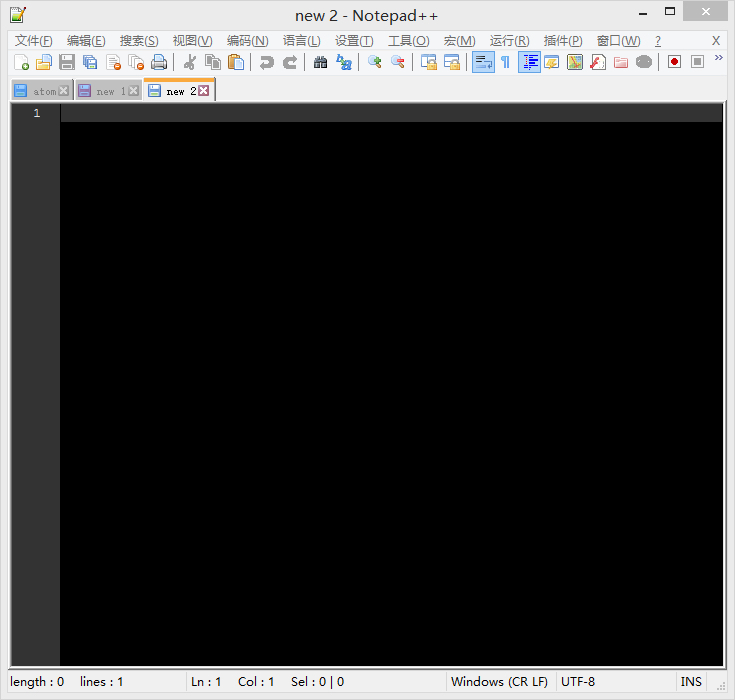
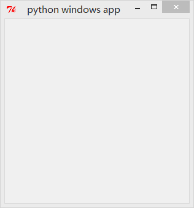

- 00 开篇词 跟我学，你也可以开发一款游戏！.md.html
- 复习课 带你梳理客户端开发的三个重点.md.html
- 第10讲 如何载入“飞机”和“敌人”？.md.html
- 第11讲 如何设置图像的前后遮挡？.md.html
- 第12讲 如何设置精灵的变形、放大和缩小？.md.html
- 第13讲 如何设置淡入淡出和碰撞检测？.md.html
- 第14讲 如何制作游戏资源包和保存机制？.md.html
- 第15讲 如何载入背景音乐和音效？.md.html
- 第16讲 如何在游戏中载入UI和菜单？.md.html
- 第17讲 如何用鼠标和键盘来操作游戏？.md.html
- 第18讲 如何判断客户端的网络连接？.md.html
- 第19讲 如何嵌入脚本语言？.md.html
- 第1讲 游戏开发需要了解哪些背景知识？.md.html
- 第20讲 脚本语言在游戏开发中有哪些应用？.md.html
- 第21讲 如何使用脚本语言编写周边工具？.md.html
- 第22讲 如何选择合适的开发语言？.md.html
- 第23讲 如何定制合适的开发协议？.md.html
- 第24讲 不可忽视的多线程及并发问题.md.html
- 第25讲 如何判断心跳包是否离线？.md.html
- 第26讲 如何用网关服务器进行负载均衡？.md.html
- 第27讲 如何制作游戏内容保存和缓存处理？.md.html
- 第28讲 热点剖析（一）：HTML5技术是如何取代Flash的？.md.html
- 第29讲 热点剖析（二）：如何选择一款HTML5引擎？.md.html
- 第2讲 2D游戏和3D游戏有什么区别？.md.html
- 第30讲 热点剖析（三）：试试看，你也可以编写一款HTML5小游戏！.md.html
- 第31讲 热点剖析（四）：安卓端和苹果端游戏开发有什么区别？.md.html
- 第32讲 热点剖析（五）：如何选择移动端的游戏引擎？.md.html
- 第33讲 热点剖析（六）：AR和人工智能在游戏领域有哪些应用？.md.html
- 第34讲 热点剖析（七）：谈谈微信小游戏的成功点.md.html
- 第35讲 热点剖析（八）：谈谈移动游戏的未来发展.md.html
- 第36讲 热点剖析（九）：谈谈独立开发者的未来发展.md.html
- 第3讲 游戏的发动机：游戏引擎.md.html
- 第4讲 底层绘图接口的妙用.md.html
- 第5讲 构建游戏场景的武器：地图编辑器.md.html
- 第6讲 从0开始整理开发流程.md.html
- 第7讲 如何建立一个Windows窗体？.md.html
- 第8讲 如何区分图形和图像？.md.html
- 第9讲 如何绘制游戏背景？.md.html
- 结束语 做游戏的过程就像是在雕琢一件艺术品.md.html
- 课后阅读 游戏开发工程师学习路径（上）.md.html
- 课后阅读 游戏开发工程师学习路径（下）.md.html
- 捐赠
第7讲 如何建立一个Windows窗体？
今天，我要跟你分享开发Windows游戏的第一步，建立窗体。
上一节，我讲解Python和C++的编译器，以及它们各自对应的IDE该如何选择，并且测试了C/C++的运行，编译了一个Lua静态库。准备工作基本上算是完成了。
如果你有一些编程功底，应该知道建立Windows的窗体所需的一些基础知识。如果你经验稍丰富一些，还应该知道Delphi、C++Builder、C#等等。这些工具都可以帮助你非常方便地做出一个空白窗体，但是这些窗体并没有游戏的绘图系统，所以它们只是“建立了一个标准窗体”而已。因此，虽然建立窗体是我们这一节的内容，但我们要探讨的是，在窗体背后，Windows系统做了什么。
Windows窗体由哪些部分构成？
我们常规意义上的Windows窗体，由下列几个部分组成。
标题栏：窗口上方的鼠标拖动条区域。标题栏的左边有控制菜单的图标，中间显示的是程序的标题。
菜单栏：位于标题栏的下面，包含很多菜单，涉及的程序所负责的功能不一样，菜单的内容也不一样。比如有些有文件菜单，有些就没有，有一些窗体甚至根本就没有菜单栏。
工具栏：位于菜单栏的下方，工具栏会以图形按钮的形式给出用户最常使用的一些命令。比如，新建、复制、粘贴、另存为等。
工作区域：窗体的中间区域。一般窗体的输入输出都在这里面进行，如果你接触过Windows窗体编程，就知道在这个工作区域能做很多的事情，比如子窗体显示、层叠，在工作区域的子窗体内进行文字编辑等等。你可以理解成，游戏的图形图像就在此处显示。
状态栏：位于窗体的底部，显示运行程序的当前状态。通过它，用户可以了解到程序运行的情况。比如的，如果我们开发出的窗体程序是个编辑器的话，我按了一下Insert键，那么状态栏就会显示Ins缩写；或者点击到哪个编辑区域，会在状态栏出现第几行第几列这样的标注。
滚动条：如果窗体中显示的内容过多，不管横向还是纵向，当前可见的部分不够显示时，窗体就会出现滚动条，分为水平滚动条与垂直滚动条两种。
窗体缩放按钮：窗体的缩放按钮在右上角，在窗体编程中属于System类目。这些缩放按钮依次为最小化、最大化和关闭按钮。
我们来看一张标准的Windows窗体截图，这个软件名是Notepad++。

这是MSDN上对于窗体结构的说明：
typedef struct tagWNDCLASSEX {
UINT cbSize; //结构体大小，等于 sizeof(WNDCLASSEX)
UINT style; //窗体的风格
WNDPROC lpfnWndProc; //窗体函数指针
int cbClsExtra; //附加在窗体类后的字节数，初始化是零
int cbWndExtra; //附加在窗体实例化的附加字节数。系统初始化是零，如果一个应用程序使用WNDCLASSEX注册一个通过在资源中使用CLASS指令建立的对话框时，必须把这个成员设成DLGWINDOWEXTRA。
HINSTANCE hInstance; //该对象的实例句柄
HICON hIcon; //该对象的图标句柄
HCURSOR hCursor; //该对象的光标句柄
HBRUSH hbrBackground; //该对象的背景刷子
LPCTSTR lpszMenuName; //菜单指针
LPCTSTR lpszClassName; //类名指针
HICON hIconSm; //与窗体关联的小图标，如果这个值为NULL，那么就把hIcon转换为大小比较合适的小图标
} WNDCLASSEX, *PWNDCLASSEX;
使用C/C++编写Windows窗体
接下来，我将使用C/C++IDE来编写代码，完成一个默认窗体的开发，并让它运行起来。
#include <windows.h>
LRESULT CALLBACK WindowProcedure(HWND, UINT, WPARAM, LPARAM);
char szClassName[ ] = "WindowsApp";
int WINAPI WinMain(HINSTANCE hThisInstance, HINSTANCE hPrevInstance, LPSTR lpszArgument, int nFunsterStil)
{
HWND hwnd; /* 指向我们窗体的句柄 */
MSG messages; /* 保存发往应用的消息 */
WNDCLASSEX wincl; /* 前面详细介绍过的WNDCLASSEX结构的对象 */
wincl.hInstance = hThisInstance;
wincl.lpszClassName = szClassName;
wincl.lpfnWndProc = WindowProcedure;
wincl.style = CS_DBLCLKS;
wincl.cbSize = sizeof(WNDCLASSEX);
上述代码开始给WNDCLASSEX结构对象赋值。
/* 使用默认图标以及鼠标指针 */
wincl.hIcon = LoadIcon(NULL, IDI_APPLICATION);
wincl.hIconSm = LoadIcon(NULL, IDI_APPLICATION);
wincl.hCursor = LoadCursor(NULL, IDC_ARROW);
wincl.lpszMenuName = NULL; /* 没有菜单栏 */
wincl.cbClsExtra = 0; /* 没有多余的字节跟在窗体类的后面 */
wincl.cbWndExtra = 0;
wincl.hbrBackground = (HBRUSH) GetStockObject(LTGRAY_BRUSH);
if(!RegisterClassEx(&wincl)) return 0;
代码在窗口过程调用函数的时候，将地址赋值给lpfnWndProc，然后呼叫RegisterClassEx(&wincl)注册窗口类，系统就拥有了窗口过程函数的地址。如果注册失败，则返回0。
hwnd = CreateWindowEx( 0, /* 扩展风格为0*/
szClassName, /* 类名 */
"Windows App", /* 窗体抬头标题 */
WS_OVERLAPPEDWINDOW, /* 默认窗体 */
CW_USEDEFAULT, /* 让操作系统决定窗体对应Windows的X位置在哪里 */
CW_USEDEFAULT, /* 让操作系统决定窗体对应Windows的Y位置在哪里 */
544, /* 程序宽度 */
375, /* 程序高度 */
HWND_DESKTOP, /* 父窗体的句柄，父窗体定义为Windows桌面，HWND_DESKTOP 是系统定义的最顶层的托管的窗体 */
NULL, /* 没有菜单 */
hThisInstance, /* 程序实例化句柄 */
NULL /* 指向窗体的创建数据为空 */
);
ShowWindow(hwnd, nFunsterStil);
/* 要显示窗体，使用的是ShowWindow函数 */
while(GetMessage(&messages, NULL, 0, 0))
{
TranslateMessage(&messages);
DispatchMessage(&messages);
}
return messages.wParam;
}
建立并显示窗体，在循环内将虚拟键消息转换为字符串消息，随后调度一个消息给窗体程序。
LRESULT CALLBACK WindowProcedure(HWND hwnd, UINT message, WPARAM wParam, LPARAM lParam)
{
switch (message) /* 指向消息的句柄 */
{
case WM_DESTROY:
PostQuitMessage(0);
break;
default:
return DefWindowProc(hwnd, message, wParam, lParam);
}
return 0;
}
最后是消息处理。当窗体程序接收到某些操作的时候，比如键盘、鼠标等等，就会呼叫 DispatchMessage(&messages)；函数将消息回调给系统，系统通过注册的窗口类得到函数指针并且通过函数指针调用函数对消息进行处理。
还有一个经常用到的函数就是MoveWindow，就是移动已经建立的窗体。MoveWindow函数用来改变窗口的位置和尺寸，如果窗体本身就按照计算机的屏幕对齐左上角，对于窗体内的子窗体，就对齐父窗体的左上角。
BOOL MoveWindow( HWND hWnd,/* 窗体句柄 */
int x, /* 窗体左上角起点x轴 */
int y, /* 窗体左上角起点y轴 */
int nWidth, /* 窗体宽度 */
int nHeight, /* 窗体高度 */
BOOL bRepaint = TRUE /* 是否重新绘制，如果是true系统会发送WM_PAINT到窗体，然后呼叫UpdateWindow函数进行重新绘制，如果是false则不重新绘制*/
);
MoveWindow会给窗体发送WM_WINDOWPOSCHANGING，WM_WINDOWPOSCHANGED，WM_MOVE，WM_SIZE和WM_NCCALCSIZE消息。
类似的功能还有SetWindowPos，SetWindowPos功能更强大，可以设置更多的参数。
这是基本的使用C/C++绘制Windows窗体的流程，也是标准的Windows窗体的创建和显示。在后续的分享中，我也会使用GDI或者GDI+来绘制一些的内容。
使用Python编写Windows窗体
说完了C/C++系统编程编写的Windows窗体，接下来来看一下，如何使用Python来编写Windows窗体。
Python的Windows窗体编程一般会使用默认的Tinker库。不过用别的窗体库也可一建立一个窗体，比如Python版本的QT库或者wxPython。
现在来看一下，使用默认的Tinker来建立一个窗体。
import Tkinter
def my_window(w, h):
ws = root.winfo_screenwidth()
hs = root.winfo_screenheight()
x = (ws/2) - (w/2)
y = (hs/2) - (h/2)
root.geometry("%dx%d+%d+%d" % (w, h, x, y))
root = Tkinter.Tk(className='python windows app')
my_window(100, 100)
root.mainloop()
运行的结果是这样的。

我们可以看到左上角有一个Tk的标识，这是Tinker的默认图标。目前，我们只是建立了一个Windows的窗体，并不能直接编写游戏。除此之外，我们还必须要知道这些建立窗体的具体的细节。
不过，就像前面的文章所说，OpenGL并不附带任何关联窗体的编程，所以如果你使用的是OpenGL的接口来编写代码，稍微修改一下，这些窗体就能成为游戏屏幕窗体。
游戏所有的内容都是在一个循环内完成的，即我们所有的绘图、线程、操作、刷新，都在一个大循环内完成，类似我们在前面看到的代码。
while(GetMessage(&messages, NULL, 0, 0))
{
TranslateMessage(&messages);
DispatchMessage(&messages);
}
以及使用Python编写的代码的窗体中，也会看到一个循环函数：
root.mainloop()
在这个while循环中，消息的派发都在此完成。游戏也一样，我们所有游戏内的代码几乎都在循环内完成。你可以想象一个循环完成一个大的绘制过程，第二个循环刷新前一次绘制过程，最终类似电影一样，完成整个动画的绘制以及不间断的操作。
在建立Windows窗体的时候，程序会从入口函数WinMain开始运行，定义和初始化窗体类，然后将窗体类实例化，随后进行消息循环获取消息，然后将消息发送给消息处理函数，最后做出相应的操作。
小结
总结一下今天所说的内容，我们编写了一个标准的Windows窗体，在编写的过程中：
窗体的结构是在建立窗体之前就定义下来的；
所有长时间运行的程序，包括游戏，包括Windows本身都是一个大循环。我们在这个循环里做我们想做的事情，直到循环结束；
如果使用脚本语言的方式编写窗体，就不需要关心那么多的东西，只需要定义坐标、位置和窗体名称即可。
最后，给你留一道小思考题吧。
你经常会看到有一些游戏是需要全屏才能进行的。既然我们在这里建立了一个窗体，那请问你，全屏是怎么做到的呢？
欢迎留言说出你的看法，我在下一节的挑战中等你！
© 2019 - 2023 Liangliang Lee. Powered by gin and hexo-theme-book.